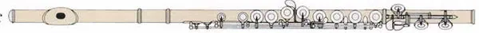
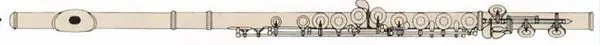
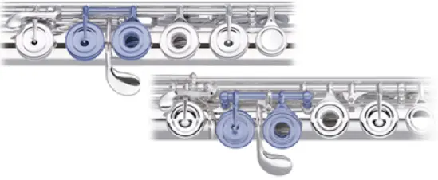
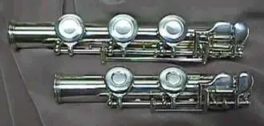

這是舊站 oliverflute.com 的文章，內容保留原貌，只修正排版。其中的考試日期、價錢和課程安排屬寫作當時的資料，請以現行公布為準。
學到某階段，同學們都會找一支進階長笛以應付難度高的樂曲，那到底要怎麼找到適合自己的呢?
選擇進階長笛的幾個步驟:
１. 價位
基本上愈貴的長笛音色基本上就會比較好，不過也是要考慮到吹奏者是否可以吹得動，因為愈貴的長笛需要更多的氣去推
銀的長笛的基本等級有分 1.只有吹嘴片(Lip Plate)材質是銀的 2.只有吹頭管材質是銀的 3.只有吹頭管和長笛管身是銀的(按鍵不是銀的) 4.整支長笛包括按鍵都是銀的。價位相對的因為銀占長笛的比例而增減。



２. In line 或 Offset
手指長的用in line 手指一般的用offset

(上圖: in line 下圖: offset)
３. B尾或C尾
B管多吹中央C以下一音(B)
音色B管和C管有差，B管因為多了一個按鍵，在做音準修正時偶而可以派上用場

是否要有Split E以及開(閉)孔問題基本上是不用考慮，除非有特殊喜愛閉孔笛，否則以手工笛來說幾乎都是有加Splip E的開孔笛。
４. 品牌
進階長笛的品牌有很多很多，香港比較常見的有日系品牌有Muramatsu、Miyazawa、Mateki、Masters Flute、Pearl、Sankyo、Nagahara以及美系品牌Powell、Brannen Brothers、Burkart、Haynes專門賣頭管的有Sheridan、Miyazawa
這麼多品牌很難選吧!這麼貴的長笛總不能憑「感覺」、「聽別人說很好」、「價錢」來選擇，提供幾個方向給大家：
1. 吹低音: 用非常非常慢的速度、以半音的方式往下吹、兩個音為一組、兩個音為一口氣。此時仔細聽低音的音色，如果是二手笛要多留意是否墊子有漏氣
2. 吹八度音: 感受一下吹高八度是否容易，容易程度? 感受吹到高八度那個音的清晰度如何?
3. 吹超高音: 仔細聆聽音色是否為你喜愛的音色，並特別吹奏第三八度的E、F#、G#、B，這幾個音常常是trouble音，仔細聆聽是否音色得宜?
4. 在三個音域上做漸強與漸弱，看是否大聲容易表現張力，小聲可以小到ppp?
5. 手指在按Trills鍵時是否可以放很輕，Trill的音色是否有共鳴?
6. 吹一段曲子，把它錄下來
7. 吹有很多吐音的樂段，仔細聆聽舌頭與發音的速度
8. 拿起你的調音器，吹半音階、五度音、八度音慢慢試音準是否都在可接受的範圍
總而言之，一支音色好、音程容易吹奏、Articulation反應快、容易吹奏大小聲變化的，必定是一支好長笛，剩下來就是你尋找你喜歡的音色和手感了！
如果你還是不確定，吹不出來或聽不出來，請長笛老師幫妳挑選一支適合你的吧～